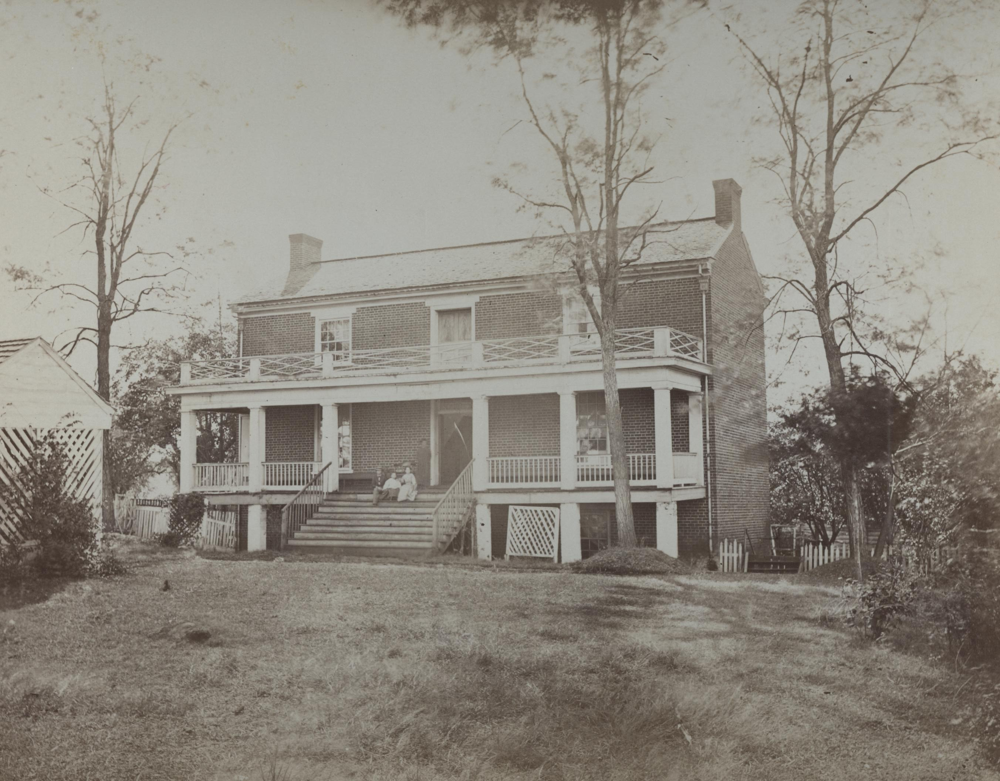
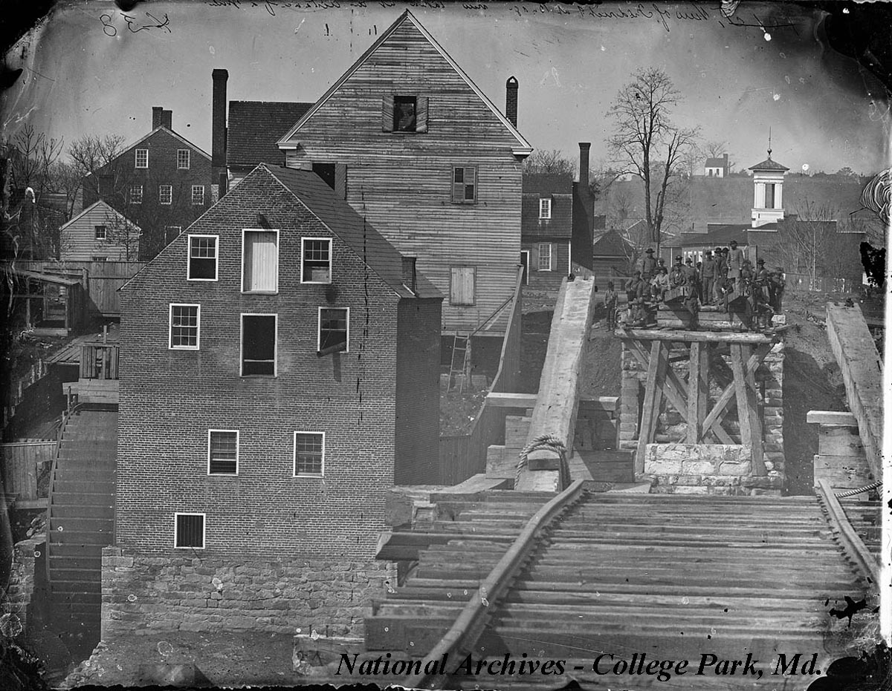

Unlisted Archive Page
You weren't supposed to find this page through the menu.
FOXGLOVE HOLLOW SENTINEL — June 1864
Considerable disorder followed the passage of cavalry through our town this week. Residents are advised that several town records, including land office documents, were disturbed or went missing amid the confusion. The town clerk's office asks that any person with knowledge of displaced records come forward.


flag{missing_records}